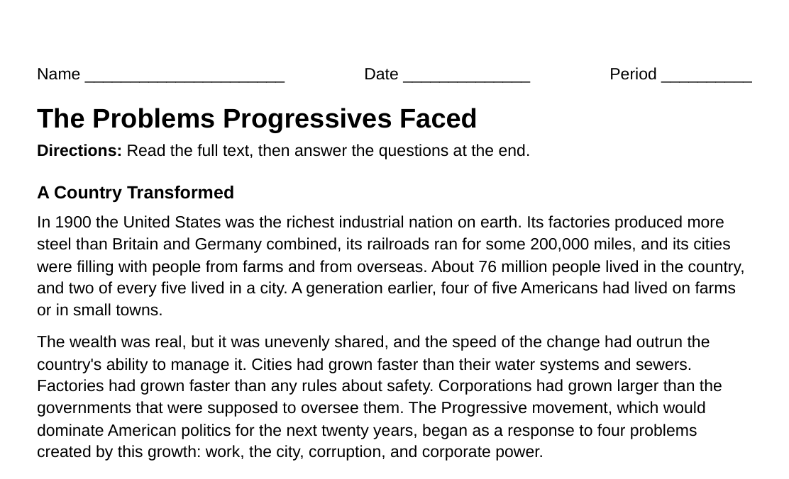
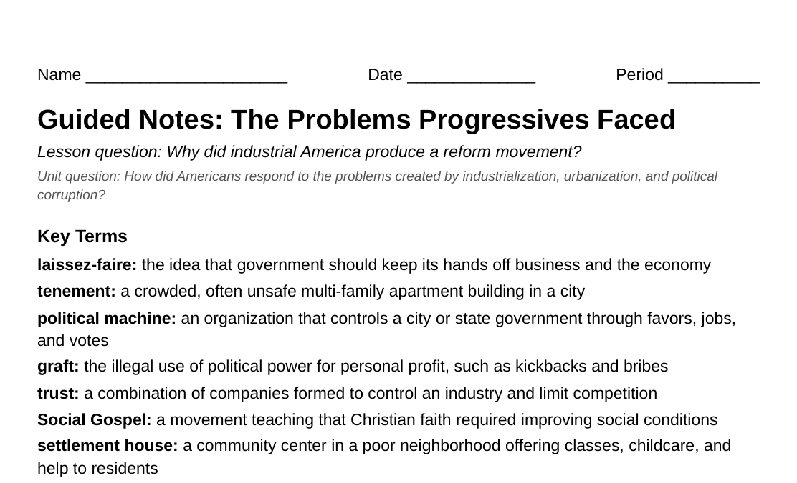

Free U.S. History sample unit
The Progressive Era
Eight lessons on how Americans responded to industrialization, growing cities, and political corruption. Includes a review day and a unit test.
Free to download. Your first download asks for an email address to unlock all files on this browser and join the resource mailing list. Signed-in teachers can download directly.

Lesson downloads
Each lesson includes a reading, guided notes, slides, and teacher notes. Activities vary by lesson. The review and test files are at the end.
Lesson 1: The Problems Progressives Faced
Test blueprint: problems of industrial America
- ReadingThe Problems Progressives Faced PDF
- Guided NotesLesson 1 guided notes PDF
- SlidesLesson 1 slide deck PPTX
- ActivityThe Reformer's Notebook, four source stations PDF
- NotebookProblems, causes, and who cared PDF
- Quick CheckThe Triangle fire escape photograph PDF
- Teacher NotesLesson 1 teacher notes PDF
Lesson 2: The Muckrakers
Lesson 3: Reforming Government
Test blueprint: political reforms; the Seventeenth Amendment; supports Prohibition
Lesson 4: Roosevelt and the Square Deal
Test blueprint: trust-busting and the Square Deal; consumer protection; conservation
Lesson 5: Taft, the Split, and the Election of 1912
Test blueprint: Taft and the Republican split; the election of 1912
Lesson 6: Wilson and the New Freedom
Test blueprint: Wilson's New Freedom; the Sixteenth Amendment and the income tax
Lesson 7: The Fight for Women's Suffrage
Test blueprint: the suffrage movement and the Nineteenth Amendment; opposition to suffrage
Lesson 8: The Limits of Progressivism
Review Day and Unit Test
The test is 50 points: matching, multiple choice, and a source-based section built on Roosevelt's muck-rake speech, the 1912 election returns, and the text of the Nineteenth Amendment.
- ReviewStudy guide with full key, all 56 terms PDF
- ReviewCrossword, 56 answers PDF
- Vocab Review Student vocabulary review on Rycal, all 56 terms Open the deck
- TestUnit test with tagged answer key PDF
Preview Lesson 1




Test blueprint
See the 15 topics and where they’re taught
The planner uses these topics to check what your selected lessons cover.
| # | Blueprint entry | Taught in |
|---|---|---|
| 1 | Problems of industrial America | Lesson 1 |
| 2 | Muckrakers and exposure | Lesson 2 |
| 3 | Political reforms | Lesson 3 |
| 4 | Seventeenth Amendment and direct democracy | Lesson 3 |
| 5 | Trust-busting and the Square Deal | Lesson 4 |
| 6 | Consumer protection | Lessons 2, 4 |
| 7 | Conservation under Roosevelt | Lesson 4 |
| 8 | Taft and the Republican split | Lesson 5 |
| 9 | Election of 1912 | Lesson 5 |
| 10 | Wilson's New Freedom | Lesson 6 |
| 11 | Sixteenth Amendment and the income tax | Lesson 6 |
| 12 | Women's suffrage and the Nineteenth Amendment | Lesson 7 |
| 13 | Opposition to suffrage | Lesson 7 |
| 14 | Progressivism and race | Lesson 8 |
| 15 | Eighteenth Amendment and Prohibition | Lessons 3, 8 |